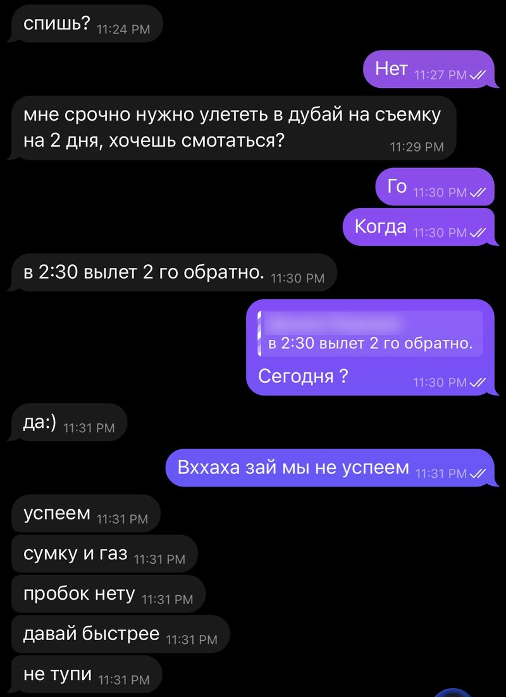
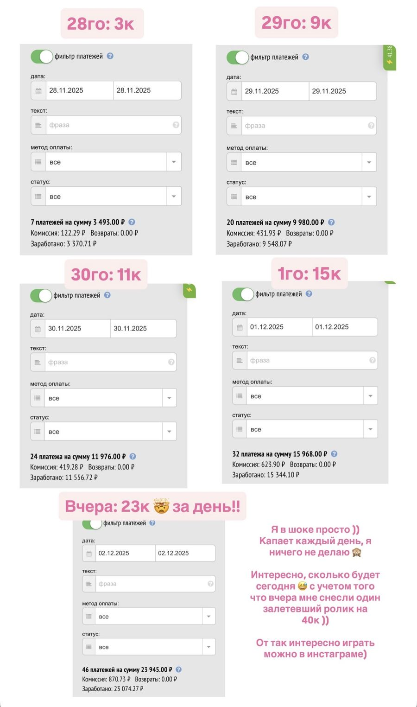
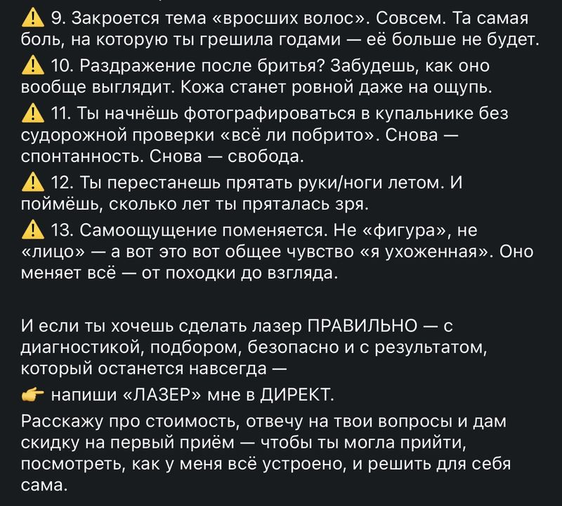
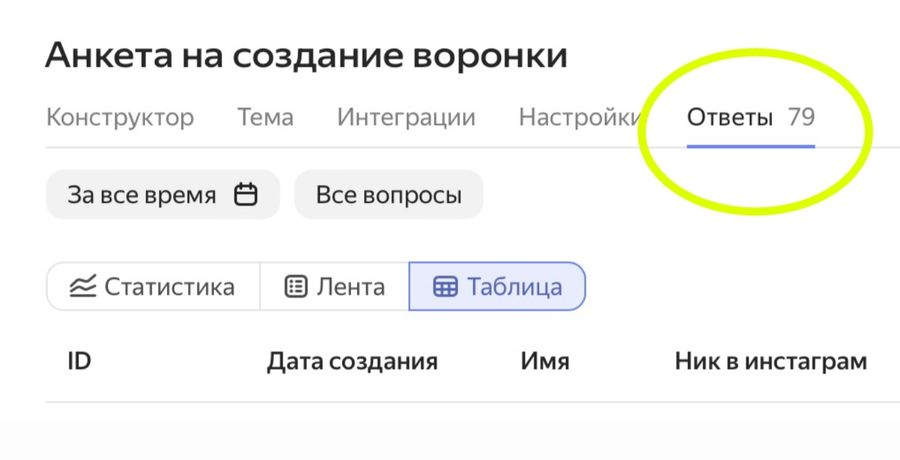
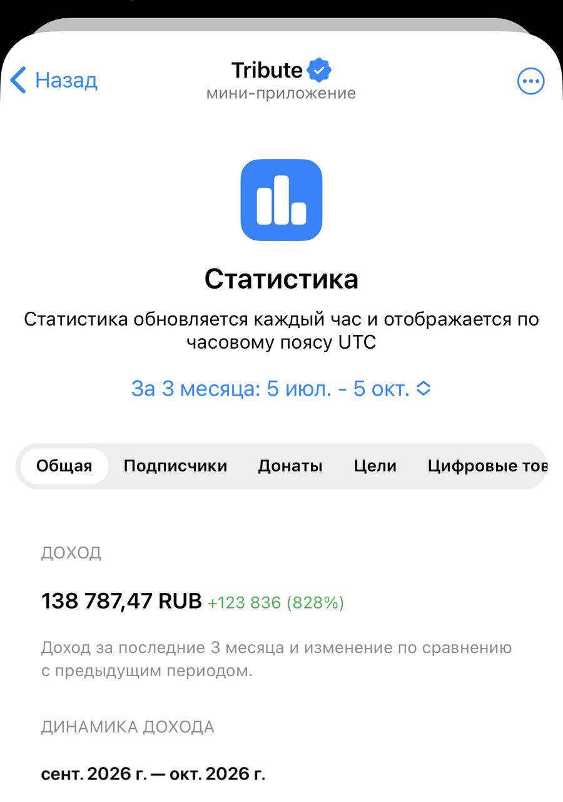
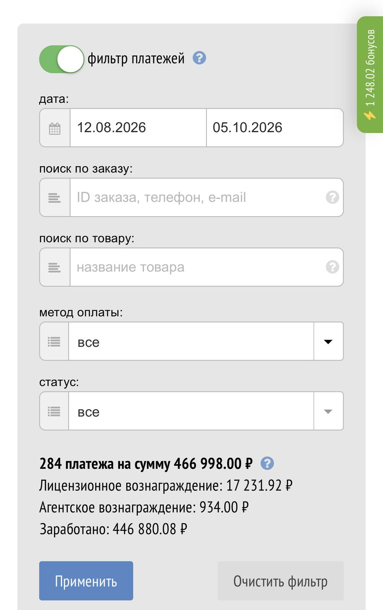
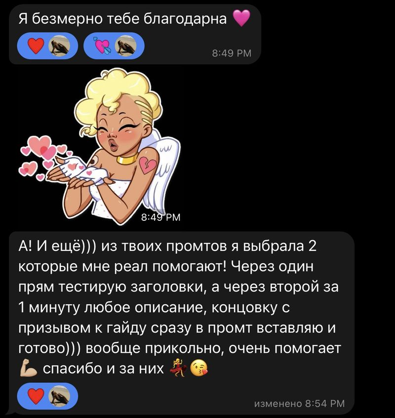
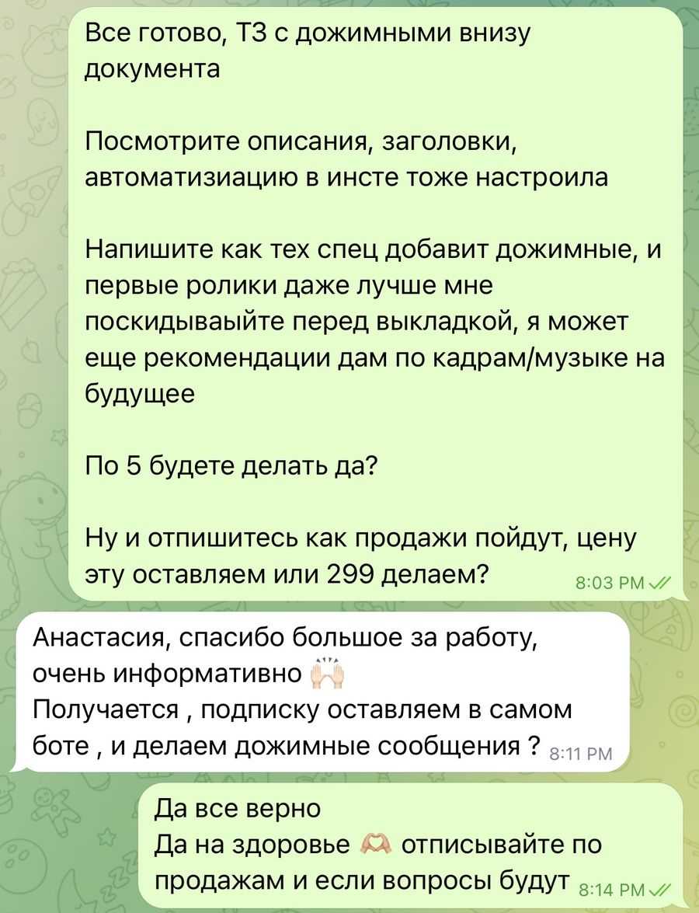

Я ГОДАМИ продавала только услуги, выкладывала рилсы и недозарабатывала 300 000 ₽ КАЖДЫЙ МЕСЯЦ на тех же самых знаниях. Скорее всего, ты сейчас тоже.
Объясняю, как специалисту создать свой онлайн-продукт и автоворонку, которая приносит деньги и заявки с блога 24/7.
Я об этом нигде не рассказывала, но тут расскажу.
Недавняя ситуация.
Время 23:30, я уже ложусь спать.
Как вдруг то самое сообщение от бывшего 😂

Я думаю: чего? Окей. А в целом почему нет?
Меня же ничего не держит. Я авантюристка, люблю спонтанности.
30 сек обдумываю. Вещи собрать — минут десять. Понимаю, что в принципе мы успеваем.
Пишу: «Окей, погнали».
Покупаем билеты, и утром я была уже у моря.

И дальше происходит вот что.
3 дня я отдыхаю.
И знаешь, сколько мне капнуло за эти 3 дня с моего блога?

Вот столько.
За 3 дня.
Лёжа на лежаке. Без моего участия.
Более того, такие суммы мне приходят не только на отдыхе. А вообще каждый день.


И сегодня я тебе расскажу, как эту магию технологию ты можешь применить и к себе, если тоже продаёшь свои услуги.
А пока давай по порядку.
Знакомая картина? И поехали…
Ты 100% классный специалист.
Твои клиенты довольны. Тебя рекомендуют. Ты точно знаешь своё дело.
Но есть один нюанс, который ты пыталась решить уже несколько раз.
Ты хочешь расти в доходе, но упираешься в часы своей работы.
- Хочешь больше денег? Больше работай.
- Заболела — доход просел.
- Хочешь в отпуск — сначала посчитай, сколько ты на нём потеряешь.
Ты можешь быть лучшим спецом.
Но выше своих часов всё равно не прыгнешь.
И, конечно, ты пробовала это исправить. (Я делала так же.)
«Как мне сделать больше денег? Ага, нужно больше клиентов. Где их взять? Так, ну все делают рилсы. Наверное, не зря. Щас начну делать, и тоже пойдут клиенты».
Ты попробовала сама — ничерта не получилось, только устала. Заявок с блога больше не стало.
Ты пыталась нанять рилсмейкера.
Тебе обещают залётные ролики, поток клиентов.
И ты думаешь: вот оно! Ну сейчас точно получится!
Но что мы имеем по итогу?
Деньги заплачены. Ролики выходят. А заявок с этих роликов как не было — так и нет.
Ты думаешь: окей, я уже давно мастер в своём деле. Надо запускать обучения. Найму продюсера!
И ты открываешь директ, соглашаешься на предложение от недопродюсера, который только что закончил курс.
Вы пашете несколько месяцев,
прописываете программу,
записываете уроки,
каждый день фигачите сторис,
снимаете рилсы, открываете продажи, и…
В директе тишина.
Ноль продаж. Запуск в никуда. Классика.
Либо.
Вроде всё получается.
Продюсер приходит на твою уже готовую аудиторию.
Полтора месяца вы её греете.
Затем ещё 2 недели продаёте.
Дальше два месяца ты ведёшь учеников.
Итог: вы заработали 500 тысяч. Тебе досталось 250к.
Ты считаешь выхлоп:
Оказывается, на запуск ушло 4 месяца.
Поделим 250к на 4 — и как-то сумма уже не так впечатляет, правда?
А после четырёх месяцев такой плотной работы ты уже хочешь на море. Но вместо моря тебе нужно скорее снова набирать аудиторию для следующего запуска.
Параллельно ты думаешь: да нахер мне вообще этот продюсер нужен был? Сама б всё сделала, ещё учеников вести, а он уже отдыхает.
И с продюсером с такими результатами вы, конечно же, расходитесь. Ты снова перестаёшь верить в обучения и возможность дохода с инстаграма.
И вновь возвращаешься к продаже своих услуг.
Окей, нафиг этих продюсеров. Вон другие продают всякие файлики, гайдики. И получают деньги на пассиве. Сделаю так же.
И ты делаешь.
Создаёшь продукт, от которого сама в восторге! Разбираешься, как технически создать бота, подключаешь платёжку.
А потом сидишь и думаешь: окей, а какие мне теперь рилсы-то снимать? 😂 Чтоб это всё продавалось. В лоб не хочу.
Путаешься в контенте, пытаешься продать через сторис, как умеешь. И в итоге: 2 продажи за месяц. И ты снова откладываешь эту историю в долгий ящик.
Продолжая терять по 300к в месяц просто из-за того, что перестала верить в эту идею.
Хотя дело было вообще не в тебе.
Не в твоей нише. Не в людях, с кем ты работала. Не в курсах, которые ты проходила, не в твоём инстаграме и даже не в рилсах.
Просто всё это время ты нанимала не тех людей
Рилсмейкер может тебе сделать рилсы, но он НЕ ЗНАЕТ, как добавить в ролики продающие смыслы, чтобы с них покупали.
- Он не соберёт тебе воронку, которая приносила бы тебе заявки.
- Не проработает тебе продукт, не разработает бота, не напишет тебе автопрогрев и не выстроит путь клиента от просмотра рилс до покупки.
Продюсер не сможет тебе выстроить крупную онлайн-школу и просто приносить деньги на блюдечке: потому что у вас пока не такие охваты.
А продавать на 500 человек в сторис — долго, муторно и невыгодно.
Ты сама, чисто на покупках курсов, не сможешь быть хороша во всём: быть одновременно и SMM-щиком, и рилсмейкером, и маркетологом, и ещё и оставаться топовым специалистом в своей сфере.
Скорее всего ты просядешь и в своём деле, и в чужом ничего не достигнешь, и получишь просмотры на отметке 500, ноль заявок с блога, рилсы в никуда и разочарование.
Вот плата человека за его попытки сделать всё самостоятельно.
‼️ Ты не должна быть маркетологом, который разбирается, как разрабатывать и продавать инфопродукты.
Ты должна заниматься своим делом.
А продажи в блоге — задача маркетолога.
А теперь переходим к той самой технологии, о которой я рассказывала в самом начале.
Мой авторский метод монетизации блога — автооплаты 24/7
Сейчас кратко расскажу, как это работает.
Продукт
Не тот, от которого ты сама в восторге. А тот, который создан на основе АНАЛИЗА РЫНКА и проблем твоих покупателей.
Продукт должен решать ту боль, которая у них горит уже настолько давно и настолько сильно, что за её решение они готовы прямо сейчас отдать любые деньги.
Сравни, кто быстрее купит?
Так я и решаю, какой продукт создать.
Воронка с автоматическим прогревом до покупки
Человек пишет кодовое слово под рилсом. Его перекидывает в бот, где он читает цепочку продающих сообщений. Так он прогревается и доходит до оплаты.
Без тебя, всё происходит автоматически через бота и подключённую платёжку.
- Но как зрителя с рилса завлечь в бот?
- Как его заставить читать эти сообщения?
- Какие маркетинговые смыслы должны быть в этих сообщениях, чтоб человек захотел купить твой продукт прямо здесь и сейчас?
Эти вопросы может закрыть ТОЛЬКО МАРКЕТОЛОГ. И я их закрываю.
Рилсы со скрытыми продающими смыслами
Не тренды и мемы, которые никуда не ведут. Не «купи-купи» в лоб. Не сложный дорогой продакшн. А простой, интересный контент, с которого и подписываются, и покупают.



Итог: 1 млн просмотров и +130 новых заявок.
Дело в смыслах, благодаря которым ролики СРАЗУ выходят именно на твоих покупателей. Поэтому у меня высокая конверсия из комментария в покупку — я умею работать со смыслами.
Рилс, кстати, занял 2 минуты — и никакого сложного продакшна.
И самое приятное
Такую воронку может себе выстроить любой эксперт, который продаёт свои услуги. Будь ты психологом, тарологом, гинекологом.
Да хоть риэлтором. Я чуть позже расскажу, что тебе можно продавать.
А вот лишь часть ниш, которым эта система подходит идеально, с потенциалом в 300к/мес (это точно лучше, чем выкладывать рилсы впустую):
- бьюти-мастера
- фитнес-тренеры
- стоматологи
- врачи
- диетологи
- нутрициологи
- психологи
- косметологи
- тарологи
- риэлторы
Кому не подойдёт!
Если ты не имеешь никакой экспертности, вообще не разбираешься в инстаграме и никогда ничего не продавал.
Тут иди учись и становись экспертом в какой-либо области, увы.
И КСТАТИ! БОЛЕЕ ТОГО! Такие автоворонки делаются не только на продукт, но и на твои услуги.
То есть человек купил у тебя гайд за 499 ₽, ему понравилось — и он идёт к тебе на дорогую услугу. Уже прогретый. Уже доверяющий.
У меня с одной такой воронки упало 79 заявок в анкету и ещё около 45 в директ.

НО! Если не иметь за спиной многолетнего опыта маркетолога в создании и продаже инфопродуктов, не уметь делать залётные продающие рилсы и не разбираться хотя бы в одном элементе из всей системы — воронка, к сожалению, не сработает.
И ни одно обучение, ни один рилсмейкер или продюсер тебе эту систему не соберёт.
Будет 2–3 оплаты за месяц. И ты решишь, что механика не рабочая.
Я знаю это не только по чужим историям.
Почему я так уверенно обо всём этом говорю? Я сама прошла через каждую из этих ошибок
Я не родилась с этим знанием.
Я так же, как и ты, годами продавала только свои услуги.
Но мне хотелось зарабатывать больше.
Чтобы у меня было несколько источников дохода.
И хотя бы один из них был таким, чтобы я могла в любой момент улететь, уйти в отпуск, заболеть — и это никак не влияло на мои деньги.
Я годами снимала рилсы.
Я думала: будут просмотры — будут клиенты.
Но неее) ничерта))
Аудитория-то набиралась. Ролики залетали.
Но клиентов не было) Оплат — тем более.
Что логично. Я же ничего не продавала. А что покупать-то?
Зрителей из рилс я никуда не вела. Они не понимали, куда зайти, куда тыкнуть, как записаться и что у меня вообще можно купить.
Пришли, посмотрели, лайкнули, ушли. Как в музей.
Я не понимала, как делать продающие рилсы. Как найти продукт, который будет продаваться. Как бл*ть вообще сделать воронку??? Я вообще ничего этого не понимала.
И дальше не было озарения или переломного момента.
Был просто долгий путь и усердная многолетняя работа)
Я закапывалась в маркетинг. В психологию потребителей. В то, как думает зритель в инстаграме, почему у одних он покупает, а у других нет.
С какого контента он покупает и по каким стоимостям. Какие форматы и на какие смыслы он идёт.
Читала книги. Изучала тысячи чужих воронок. Снимала по 10 рилсов в день. Тестировала гипотезы, половина из которых проваливалась. Переписывала смыслы. Снова тестировала.
Ошибалась. Сливала время. Сливала деньги. Что-то получалось, что-то снова проваливалось.
И только последние годы, спустя 4 года моих проб и ошибок, изучений и тестов, я получаю одни из самых высоких результатов на рынке.
Ко мне приходят консультироваться звёзды и топовые продюсеры.
А мои продукты приносят до 40 тыс руб В ДЕНЬ. (А ведь это чья-то месячная зарплата…)
Моя почта уже год выглядит так:
И это доход ТОЛЬКО с пассива (автооплат), где я вообще ничего не делаю, без учёта продаж консультаций, обучений и услуг:
1 января: 14к
2 января: 35к
3 января: 36к
4 января: 27к
5 января: 20к


Это был мой продукт всего за 499 рублей: промпты для рилсов. При этом ролики набирали в среднем 2–4 тысячи просмотров, а каждый приносил 2–3,5 тысячи рублей.
Это лучше, чем выкладывать их в пустоту. Продукт стал приносить по 600 тысяч в месяц, а за три месяца воронка принесла 1 350 713 ₽.

Важная пометка.
Всё это без наставничеств, без раздутых обещаний, без оверпрайсовых продуктов, фотографий с Ламборджини, кринж-прогревов в сторис и прочего.
Только продукт, попадающий в боль, рилс и качественная воронка.
И вот тогда-то я и посчитала, сколько годами я не брала денег, лежащих на столе перед носом. Минимум 300 тысяч каждый месяц. На тех же самых знаниях.
А потом я повторила эту систему ЕЩЁ РАЗ с нуля
Если честно, хотелось доказать самой себе, что могу повторять результат с любым количеством подписчиков и в любой нише.
Смотри и запоминай:
- 10 июля я создала новый аккаунт. Ноль подписчиков.
- 25 июля запустила на нём воронку на новый продукт — решила сделать клуб.

На разработку ушло 15 дней, и к 25 июля подписчиков было уже около 3 700. Даже не 10 тысяч.
Я запускаю продажи. НЕ В СТОРИС!! А ТОЛЬКО ПУЛЯЮ НЕСКОЛЬКО РИЛС в своём любимом продающем стиле.
Я не копила аудиторию годами, чтоб начать продавать, и не ждала, когда стану экспертом в дисциплине (на эту тему клуб).
И знаешь, что произошло? Сколько времени мне понадобилось, чтобы получить первые деньги с нулевого аккаунта?
25 июля мне уже упала первая оплата. В день запуска воронки. 2430 ₽.
26 июля мне уже накапало 10 530 ₽.

Уже захотел так же? 😂 Как я могу это сделать тебе — расскажу в конце.
Сейчас блогу уже 3 месяца, а воронке 2 месяца. И за это время с одного лишь клуба мне накапало вот столько:
За два месяца клуб с нового аккаунта принёс мне больше 600 тысяч рублей.


И вот что важно не перепутать.
Большинство думает: сначала годами копим аудиторию, а потом начинаем продавать.
Нет. Сначала продукт и воронка. Потом рилсы.
Аудитория всё равно будет набираться параллельно. Мне за 3 месяца пришло 14 тыс подписчиков. Но при этом ещё 600 тыс руб.


Поэтому делай так, чтоб тебе с каждого рилсика уже капала денежка, так и блог вести интересней.
«Окей, но это у тебя. А у меня сложная узкая ниша. Что мне вообще продавать?»
Справедливо.
Вот Аня, мастер по волосам, моя клиентка
Казалось бы, она работает руками, с клиентами в кресле. Кого и чему ей обучать?
До меня Аня сливала по 300к на обучения, которые не привели ей ни одной заявки. Ни одной.
Рилсы она снимала. Старалась. А в ответ в директе была тишина.
И она уже не знала: то ли это с ней что-то не так? То ли у неё ниша слишком специфическая? То ли инстаграм её «не любит»?
И в какой-то момент Аня просто закрыла все свои непонятные обучалки, прекратила работу с продюсером и пришла ко мне.
Вместе мы сделали 2 платных продукта и 1 бесплатный. Я настроила ей воронку.
А дальше я просто процитирую, что она мне написала. Лучше, чем она, я не скажу:

за две недели. С нуля.
Вот как выглядела её почта после работы со мной:
А спустя всего МЕСЯЦ после запуска нашей воронки было уже вот так:

А до этого у Ани не было ВООБЩЕ никаких оплат из инсты. Ни разу. Только изредка приходили какие-то клиенты.
Вдумайся.
Человек годами вкладывал сотни тысяч в обучения. Верил. Ждал. Разочаровывался.
А первые деньги из инсты пришли за две недели после того, как у неё появилась система.
И знаешь, что для меня самое ценное в этом кейсе? Не цифры.
А её последняя фраза:
Я обязательно доберусь до заветного 1 🍋 в месяц на инсте)) Теперь я понимаю, что это возможно)))
Не «надеюсь». Не «может быть когда-нибудь».
Теперь понимаю, что возможно.

Вот ради этого я и делаю свою работу.
Другой пример — доказывающий, что не нужно ждать аудиторию годами
Илья, фитнес-тренер.
Мы создали нулевой аккаунт. Выкладывали рилсы ровно 4 дня. Просмотры — до 291 тысячи.

И ладно просмотры, это было не главное.
Цель — деньги, и мы её выполнили.
Внимание. В ПЕРВЫЕ ДВА ДНЯ в кассе уже 6 500 ₽ просто с рилсов.

Это я к тому, что если ты уже несколько лет ведёшь инстаграм, но твой контент тебе всё ещё не приносит деньги — ты оойййй как много тыс рублей теряешь КАЖДЫЙ ДЕНЬ на пустом месте.
А вот ещё одна моя клиентка
Раньше у неё уже были ролики АЖ НА 300 ТЫСЯЧ ПРОСМОТРОВ! Что могло бы ей принести до 200 000 ₽ тупо с одного такого ролика.
Но.
У неё с этого рилса было ноль оплат. Ноль.
Именно с этим она и пришла ко мне.

Я внедрила ей скрытно продающие смыслы в её рилсы, и у неё сразу пошли продажи:



Просмотры и деньги — разные вещи.
И подход к ним нужен РАЗНЫЙ. Для моей системы не нужно уметь делать миллионники.
Это доказывает четвёртый пример.
У ещё одной моей клиентки — мастера маникюра — первая оплата пришла с ролика, на котором было всего смешных 500 просмотров.


А теперь посчитай, сколько роликов у тебя есть на 500 просмотров? Сколько денег ты уже упустила? Оплата, кстати, пришла ночью.
Пока она спала 🥰 О чём я и говорю, что воронки работают за тебя всегда, даже пока ты спишь — это не выдумка 🤣 Те самые люди, которые листают рилсы в 3 часа ночи, покупают твои продукты :)
Окей, Настя, это всё хорошо. Но что вообще можно продавать?
Как обещала, возвращаюсь к этому вопросу.
Если сейчас тебе кажется, что продавать нечего, посмотри на эти, казалось бы, ГЛУПЕЙШИЕ примеры, на которых люди делают миллионные выручки :) пока ты думаешь, что ты не готова продавать…
- Тренер: 7-дневный план тренировок дома без инвентаря
- Психолог: гайд «5 упражнений, чтобы перестать тревожиться перед сном»
- Косметолог: схема восстановления кожи за 14 дней без трат на крема и косметологов
- Эксперт: шаблоны продающих ответов в директе, чтобы клиенты покупали без созвонов
То, что тебе кажется «ну это же элементарно», для другого человека — решение его проблемы.
И смотри. Те самые «глупейшие» примеры.
🏙️ Девушка просто переехала в Москву. Собрала список районов, реальные цены, свои ошибки и подводные камни. Продаёт за 690 ₽. Напродавала на 3,5 миллиона. Она не риэлтор.
Она просто поделилась полезным для других опытом.
🤖 Парень собрал 50 бесплатных нейросетей для бизнеса. Ссылки и короткое описание. 490 ₽. Выручка — порядка 2 миллионов за 2 месяца. Он не айтишник) просто поделился своими наработками.
🎥 Рилсмейкер. Собрала список ссылок на своё проверенное оборудование на озон и вб. Выручка, тут не упади… 7 млн… да, здесь уже даже я была в шоке 🤣
Если люди без экспертности делают на этом миллионы, представь, что можно упаковать из твоего опыта.
Но помнишь мужчину с натёртыми ногами?
Вот найти в твоей нише этого человека — и есть самая сложная для других, но любимая для меня задача. Изучить твоих покупателей, найти горячую боль, с которой они уже устали жить, а затем узнать, какие рилсы на них снимать, чтобы они вышли сразу на тех, кто УЖЕ ищет твой продукт — вот что я закрываю, и что принесёт тебе деньги.
Именно это я и делаю как маркетолог в автопродажах в инстаграме.
Надеюсь, на моих личных примерах ты уже поняла, что система действительно работает, и будет работать и у тебя, просто ранее ты работала не с теми людьми и вы строили не те системы.
И теперь у тебя есть 3 пути
Отложить создание воронки и продолжить терять деньги каждый день
Дальше выкладывать рилсы в никуда. Сидеть без заявок и без денег. Работать руками с утра до вечера. Вручную записывать себе людей, отвечать в директ, переносить, подтверждать.
Надеяться на сарафан. Пытаться продать обучения самостоятельно.
И очнуться спустя три года. Когда твои коллеги уже купили тачки и квартиры с инстаграма, а ты всё боялась тогда продавать.
Только вот какая штука: этот путь тебе всё равно предстоит пройти. Вопрос лишь в том, когда ты на него встанешь — сейчас или через три года, когда рынок уже займут другие.
А пока ты не выстроишь себе эту систему, ты продолжишь платить. Либо временем, либо деньгами, либо нервами. Каждый день.
Сделать всё самой
Изучить создание воронок, как делать продающие рилсы, погрузиться в маркетинг в инфобизе, разобраться в ботах и платёжках, протестировать разные продукты, разные стоимости, написать разные цепочки, отслеживать конверсии, ошибаться, терять 70% клиентов (и даже не знать, на каком этапе), снова докручивать, снова ошибаться, а потом рилс не залетел, блин, в чём же дело?
Почему не покупают?
Пройти этот путь — реально. Я так и сделала. Но вот только я маркетолог, и это моя профессия. Я и должна была это сделать.
А твоя профессия — другая. И как я плачу мастеру маникюра за маникюр — так и мне мастер маникюра платит как маркетологу за деньги, которые я ему приношу.
Если у тебя есть свободные четыре года и ты вдруг решил переквалифицироваться в маркетолога 😂 — вперёд! Это рабочий путь.
Чтобы систему тебе сделал человек, который уже прошёл этот путь
А вот если ты хочешь оставаться мастером в своём деле, при этом открыть для себя новый источник заработка на своих же знаниях, которые у тебя годами уже накопились — это ко мне.
Ты занимаешься своим делом — я своим.
А именно: приношу тебе автооплаты.
Вернее, настраиваю всё один раз так, чтобы эта система тебе потом годами приносила оплаты.
Ближе к делу. Как я сама могу построить тебе эту систему
- Я не продам тебе обучение с обещанием золотых гор за 250 тысяч рублей (не мечтай 😂), т.к. даже если б у меня было обучение — ты всё равно запуталась бы в сложности и на половине слилась, потеряв время.
- Я не проведу тебе консультацию, рассказав, как всё устроено, потому что в одиночку ты это всё не сделаешь.
- Я не буду работать с тобой за %, отбирая твой хлеб, потому что на это у меня есть свои личные проекты.
И в целом я маркетолог, а не инфоцыган, чтоб заниматься таким.
Вместо этого я как специалист в своём деле СОБЕРУ ТЕБЕ САМА ОТ И ДО ВСЮ ЭТУ СИСТЕМУ своими руками: ту самую, которая прямо сейчас приносит деньги мне, Ане, Илье и другим моим клиентам.
Кому подойдёт
Как я сказала, я работаю со специалистами, у которых уже есть опыт и ниша. Бьюти-мастера, фитнес-тренеры, стоматологи, врачи, диетологи, нутрициологи, психологи.
- У кого-то продукт уже есть, но он не продаётся — я докручу воронку и продукт, чтоб его покупали.
- Кто-то пока вообще не знает, что продавать, кроме своих часов. Это нормально, для этого есть я, продукт сама вам разработаю, так даже лучше.
- Нет ниши, нет экспертности, и хочется, чтобы я с нуля придумала, кем тебе быть, и принесла тебе деньги — тут уж нет, не получится. Мне нужно, чтоб было, что упаковывать.
Что ты получишь на выходе от работы со мной
СИСТЕМА АВТОПРОДАЖ на каждый день
Вы получаете готовую воронку под ключ, которая будет:
- nродавать без выходов в сторис и регулярно приносить новые заявки
- собирать базу клиентов в вашем личном боте, которую в дальнейшем можно монетизировать, делать на нее рассылки и доп nродажи
- nродавать на автомате и получать пассивный доход без вашего участия благодаря подключению автоnродаж
- настроим все процессы в блоге, чтобы он приносил вам заявки за вас, пока вы занимаетесь другими делами
- полностью автоматизируем чат-бота, через которого лид автоматически прогревается до заявки на услугу / автооплату
- докрутим лид-магниты, продукт, чтобы доставать максимум nродаж ежедневно
ЧТО БУДЕТ СДЕЛАНО ⬇️
- бриф, распаковка экспертности, изучение вашего продукта
- анализ ЦА: изучение болей, потребностей + нахождение проблемы, за которую платят СРАЗУ.
- подготовка материалов: докрутим лид-магниты и продукт
- разработка telegram-бота: создание сценариев диалогов, прописывание автопрогрева и триггеров
- полная автоматизация чат-бота с доведением лида до заявки на услугу / автооплату
Как всё проходит
- Сейчас ты заполняешь анкету, чтоб оставить заявку на работу со мной.
- Далее — Консультация. Голосовой созвон. Разбираю твою ситуацию: нишу, опыт, блог, что уже есть и что можно из этого сделать. Если мы друг другу подходим — рассказываю условия работы. Консультация бесплатная.
- После созвона, если договорились работать — оплата, и я начинаю работу.
- Бриф и распаковка. Достаю из тебя всё, что можно превратить в деньги.
- Концепция продукта. Анализирую рынок и проблемы твоих покупателей.
- Согласование. Показываю тебе концепцию воронки и продукта, утверждаем вместе. Только потом собираю.
- Реализация. Продукт, воронка, бот, цепочки, платёжка.
- Сценарии к рилс и запуск. Ты выкладываешь рилс, получаешь первые оплаты.
Прямо сейчас я готова взять несколько проектов на ноябрь.
Т.к. каждый проект я реализую сама вручную, много проектов одновременно я взять не могу, поэтому количество мест ограничено.
‼️‼️ Только для тех, кто уже имеет нишу и экспертность.
Следующий набор — только в январе.
Поэтому, если хочешь успеть на ноябрь, жми кнопку «Оставить заявку», и я с тобой свяжусь.
Оставить заявкуЭтот путь тебе всё равно предстоит пройти
Можно и дальше продавать только свои часы.
Можно ещё год снимать рилсы в пустоту. Можно месяц делать «гениальный» продукт, который купят два человека. Можно ещё раз сходить к недопродюсеру.
Я этот путь прошла. Знаю, сколько он стоит. И по времени, и по деньгам.
И ты уже платишь. Прямо сейчас, каждый день.
Рано или поздно ты всё равно придёшь к своему продукту и своей воронке. Вопрос только, сколько лет и денег ты на это потратишь.
А можно уже в ноябре всего за 14 дней :)
Жми кнопку «Оставить заявку» и заполняй анкету.
Ой. Ты всё ещё тут? 😅
Тогда просто представь, как это может выглядеть.
Ты заканчиваешь с клиентом, берёшь телефон, а там уведомления об оплатах. Пришедшие, пока у тебя были заняты руки.
Ты не выходила в сторис, не уговаривала никого в директе, не проводила созвоны. Рилс сделал своё дело, бот — своё, платёжка — довела.
Помнишь мой Дубай? Вот это оно.
Ты всё ещё читаешь? Класс! Тогда давай разберём твои «а если…?» :)
«А если у меня маленький блог?»
Илья стартовал вообще с нулевого аккаунта и за первые два дня заработал 6 500 ₽. Другая моя клиентка получила первую оплату с рилса на 500 просмотров.
Ночью. Пока спала. Я сделала 600к с аккаунта, которого 3 месяца назад ещё не было. Запомни: нет смысла делать рилсы, пока у тебя нет воронки.
«А если у меня нет времени?»
Поэтому всё делаю я. От тебя только: бриф, согласовать идею и выкладывать рилсы по готовым сценариям. Всё на мне.
И нет, сценарии не на полдня съёмок. Ролик лазерной студии на миллион просмотров сняли за две минуты. Я только простые, но результативные рилсы и делаю.
«А если я не умею снимать?»
Тебе не нужен продакшн, монтажёр и кольцевая лампа за 15 тысяч. Нужен простой кадр, но с правильным смыслом. Смысл я тебе дам, а снять на телефон ты точно сможешь.
«А если я уже пробовала, и ничего не вышло?»
Аня тоже пробовала. И сливала по 300к на обучения. Разница в том, что теперь этим занимается маркетолог, а не недопродюсер или ты сама по курсам.
«А если моя ниша не подходит?»
Аня — мастер по волосам. Илья — фитнес-тренер. Я — делала продукты и про рилсы, и про дисциплину. Приводила деньги студии лазера, мастеру маникюра, финансисту.
Ни у кого из них не было какой-то особенной «простой ниши». Если у тебя есть экспертность, из неё можно сделать деньги.
«Я не разбираюсь в ботах, платёжках и всём этом»
И не надо. Это моя работа. Всю техническую часть я сделаю за тебя, с тебя только СЗ или ИП для приёма платежей.
«Дорого же, наверное?»
Не знаю :) у всех «дорого» — своё. Но точно стоит того, чтоб заплатить один раз, а далее получать по 200–300к дополнительно каждый месяц годами.
Аня отдавала по 300 тысяч за обучения, которые не привели ей ни одного клиента. Продюсер забирает половину запуска и уходит.
А система, которую я делаю, остаётся у тебя и продаёт дальше. Каждый день.
тебе не обязательно повторять 🙃
Как записаться?
Жми кнопку ниже и заполняй анкету на разработку твоей собственной воронки 👇🏼
Заполнить анкетуЕсли ты давно хотела создать свой онлайн-продукт — время пришло!
P.S.
О, ты добралась до P.S.
Тогда коротко, суть:
Я своими руками собираю тебе систему автопродаж: продукт, рилсы, воронку. На продукт и на услуги. За 14 дней.
Один раз запускаешь — дальше она приносит деньги и заявки. Даже когда ты в Дубае. Или спишь. Или в Дубае спишь.
Сейчас доступна запись только на ноябрь.
P.P.S.
Серьёзно? Ты всё ещё читаешь?
Ладно. Тогда вот что.
Ещё один месяц ты будешь продавать свои часы.
Ещё один месяц твои рилсы будут приносить лайки, а не деньги.
Ещё один месяц 300 тысяч, которые могли быть твоими, но пройдут мимо.
Вопрос только, сколько таких месяцев ЕЩЁ ты готова прожить.
До тех пор, пока не придёшь снова ко мне 😂 но вот цена будет уже дороже… (инфляция).
P.P.P.S.
Невероятно. Ты всё ещё здесь.
Что ещё тебе показать? Фокус? Скрин из Дубая ещё раз?
Тогда последнее.
Пока ты читаешь эту статью, кто-то в твоей нише выкладывает рилс с кодовым словом.
Возможно, он слабее тебя как специалист.
Возможно, у него хуже продукт.
Но твой будущий клиент купит у него.
Не потому что он лучше. А потому что он у клиента в ленте с готовым продуктом, а у тебя его нет.
Запись на начало ноября. Следующий набор в январе.